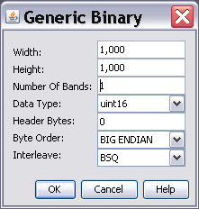

| Import Complex Generic Binary | |
The Generic Complex reader opens a raw binary file that holds one complex image, for example an SLC exported by another SAR processor. It is the complex counterpart of Import Generic Binary.
A headerless (or fixed-size header) binary file. Each pixel is stored as a real part followed by an imaginary part (Re, Im, Re, Im, ...), line after line. No mission is implied: you describe the layout yourself.
int16, int32 or float32 per
component..bin, .raw, .cpx, .cr4
and .ci2, but any file can be selected.
This reader is not used by File > Open Product; use the import menu.
i and q (units real and imaginary) and a virtual
Intensity band. The product type is Complex..xml, or metadata.xml in the same folder. Such a
file (as written by SNAP) is loaded into the
Abstracted Metadata,
including any tie-point grids it holds.Check the image in the viewer and derive what you need with
Band Maths
(for example the phase, atan2(q, i)). When the data came from a supported mission,
open the original product with its mission reader instead, so that the SAR metadata is available.
None: this is a user-described raw format.